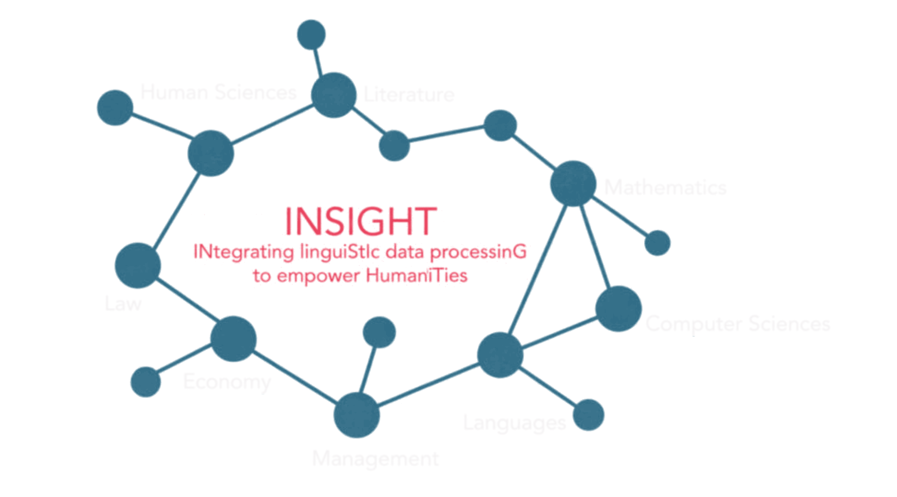

lINguiStIc data
processinG to empower
HumaniTies
Le projet
Le projet INSIGHT se situe au croisement des recherches en sciences humaines, en intelligence artificielle et en traitement automatique du langage (TAL). Nous proposons de renforcer ce lien à partir d’un double constat sur la situation actuelle de la recherche :
- une compréhension encore insuffisante des capacités et des possibilités qu’offre l’IA pour le champ scientifique en général ;
- un développement de ces technologies qui se fait en dehors de leurs usages et de leurs impacts réels.
Parallèlement, un autre constat peut être fait sur les atouts de l’Université de Lorraine. D’une part, il s’agit d’un site universitaire large et pluridisciplinaire, qui réunit pratiquement toutes les thématiques du monde académique contemporain ; d’autre part, l’établissement dispose de forces reconnues, aux niveaux national et international, pour la qualité de sa recherche en TAL, et donc en IA.
Ces atouts constituent un terreau fertile qu’il nous semble essentiel de développer. La question scientifique posée est particulièrement complexe et nécessite un travail de développement approfondi sur au moins une décennie, d’autant plus si l’on considère le plein potentiel de l’Université de Lorraine. Nous estimons donc nécessaire d’envisager ces développements en deux temps : une première phase d’amorçage — correspondant à la proposition actuelle — puis une phase de déploiement plus large.
